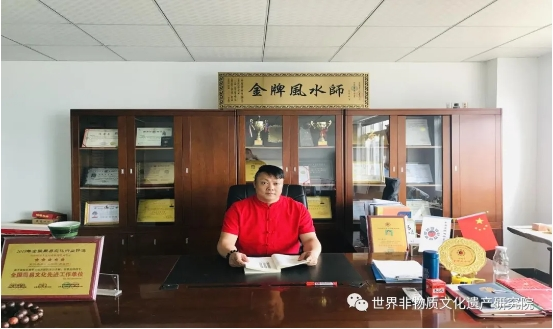
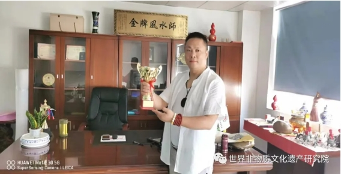
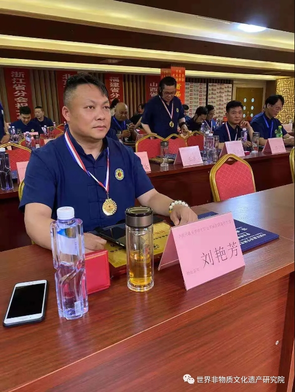
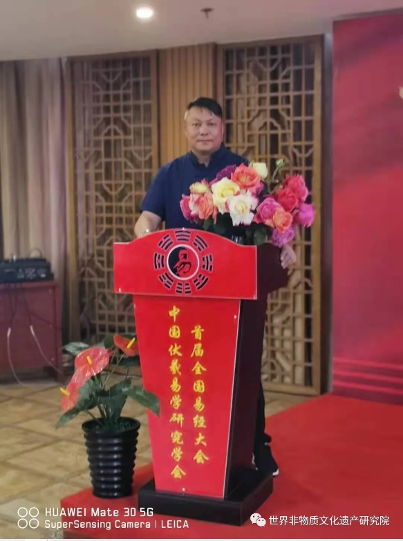
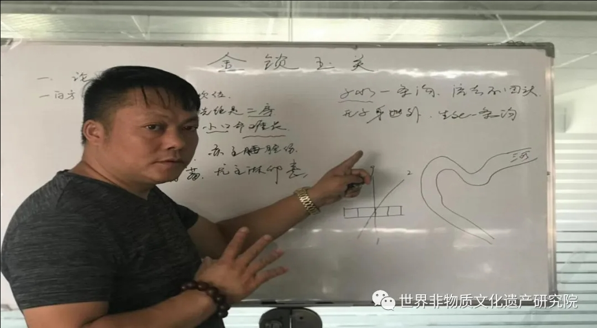
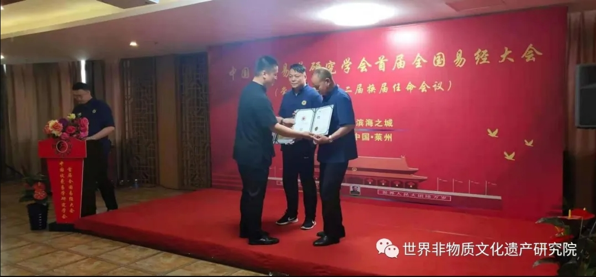
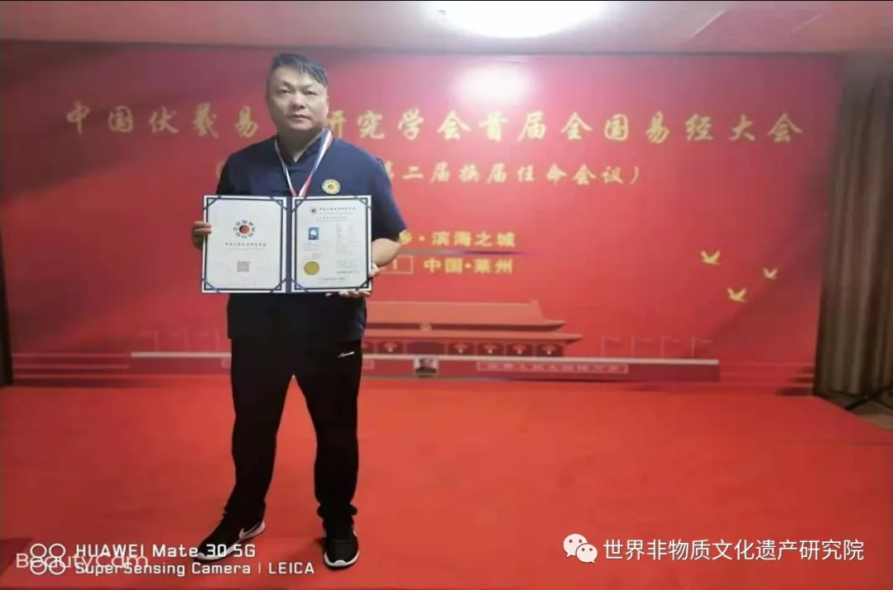
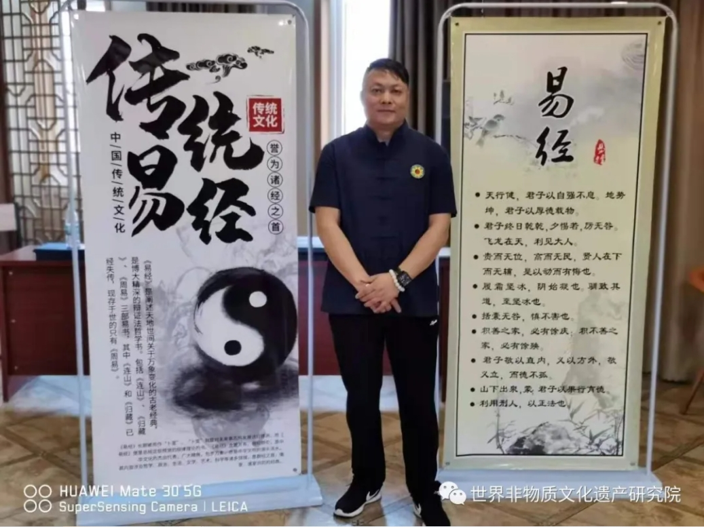
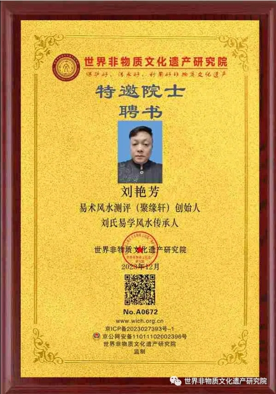
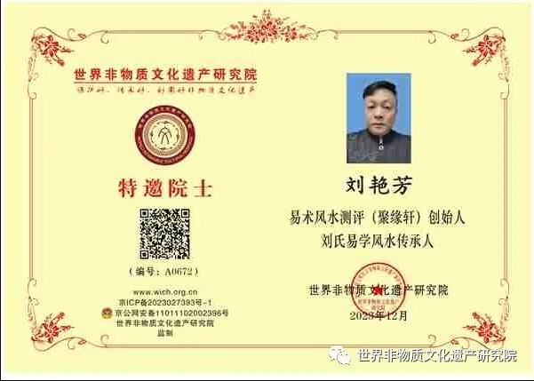

世界非物质文化遗产研究院特邀院士：刘艳芳
刘艳芳，祖籍：湖北 武汉
刘氏易学风水传承人，易术风水测评（聚缘轩）创始人，中国伏羲易学研究学会总会荣誉会长，世界非物质文化遗产研究院特邀院士，中国管理科学研究院国学文化科研会主席。
国家一级建筑风水师 ，中国金牌风水师，中国高级命理师。
中国高级风水师，中国金牌择日师，中国金牌起名师。
华夏堪舆寻龙名家，中国周易文化权威专家，中国最具影响力易学名师，文王易学文化荣誉会长，文王易学文化易学高级讲师，湖北武汉市周易研究中心主任，2020年中国十大杰出预测学人物，2021年中国十大杰出风水学人物。
祖传四代职业风水师,先祖是形势派风水祖师杨筠松门派之弟子,特别是其爷爷在当时云南,广西,广东,江西,湖北,贵州等地以其独特的风水术为广大人民化煞解难,指点迷津,深得广大客户的好评,并送其美名“刘眼镜”。
刘艳芳老师,自小出生在风水世家,幼承祖训,深得其父的家传风水术,及周易预测,命理学,并长年在外寻师访友,走偏大江南北,名山大川,寻龙点穴,学习博取各流派之长,去其糟粕,取其精华,古今相结合,以祖传风水法术与现代城市楼盘相结合,总结出了一套自己创新的现代实用风水术,以独特的见解,不拘一格的创新,理论结合实际,经过无数次的现场布局,论证,实战技术为广大客户化煞解难,指点迷津,并得到同行和客户的一致好评。
2017年获得【中国高级风水策划师】职称,【中国周易文化先进工作导师】职称, 【中国周易大师荣誉称号】职称。
2019年3月获得【当代易学大师奖】” 2019年6月被华夏周易文化行业授予:【华夏风水学泰斗】,终身成就荣誉称号 2019年7月被文王易学文化聘为【易学高级讲师】,任期十年。2019年7月签约山东文王易学文化传媒有限公司【御用风水师】 2019年8月被评为【中国十大杰出预测学人物】 2020年4月荣获【中华风水金罗盘奖】 2020年7月荣获【中国十大杰出风水学人物】 。
2021年1月荣获【国际华夏易学专家】称号 2021年5月荣获【中国周易大师证书】
2023年获得中国管理科学研究院【智库专家证书】（国学文化科研会主席），世界非物质文化遗产研究院特邀院士。
天行健，君子以自强不息。
地势坤，君子以厚德载物。
人生格言：
读万卷书不如行千里路，行千里路不如阅人无数，
阅人无数不如名师指路；经师易得，人师难求。

本文来源：世界非物质文化遗产研究院 公众号
原文地址：世界非物质文化遗产研究院
原文地址：世界非物质文化遗产研究院